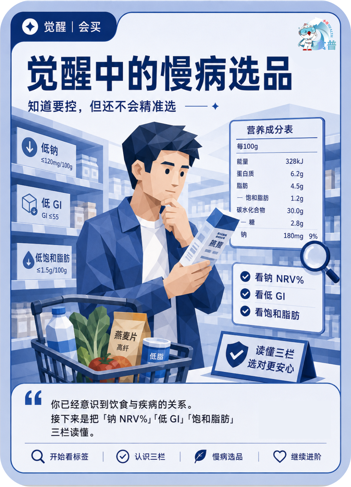

慢病管理人群
觉醒
会买
C11
觉醒中的慢病选品
知道要控,但还不会精准选
你已经意识到饮食与疾病的关系。接下来是把「钠 NRV%」「低 GI」「饱和脂肪」三栏读懂。
手机端可点击“打开原图”后长按图片保存；也可以直接长按上方图卡保存。

知道要控,但还不会精准选
你已经意识到饮食与疾病的关系。接下来是把「钠 NRV%」「低 GI」「饱和脂肪」三栏读懂。
手机端可点击“打开原图”后长按图片保存；也可以直接长按上方图卡保存。